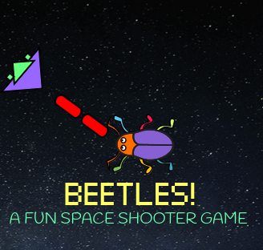

Released in 1972, this game was popular for its simplicity and pixelated graphics that made it very fun and easy to play This game is now being remade in newer programming languages,like scratch! this is the version I made in scratch. 
This is a clone of the popular 'Asteroids' game from the '90s, remade in scratch! Play it here: